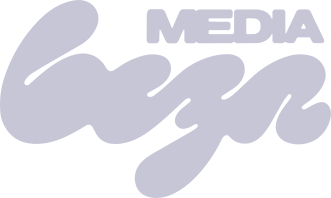

Cinco marcas visuais que aparecem em tudo.
Se um material da Beza não tiver esses cinco elementos, ele não parece da Beza. É o menor denominador comum do sistema, de um post a uma landing.
Heading nunca em Regular 400. O letter-spacing:-0.02em é o que dá o ar editorial.
IBM Plex Mono em eyebrow, label, ano e categoria. É o "ar técnico" da marca.
Só em elemento flutuante: nav, dropdown, drawer. Nunca em bloco grande de conteúdo.
A pele da interface. Está ligado nessa página inteira, em 4%.
Pill mono uppercase com dot lilás pulsando. Abre capa de página, seção temática, proposta e slide.
#C82AEF, ou material sem grain.
O símbolo que carrega a marca.
Versão final de 31/jul/2026: wordmark script "beza" com MEDIA embaixo, viewBox 760×198. Todos os arquivos regravados a partir desse vetor.
02.1 Aplicação por fundo
Em interface dark-first o logo aparece branco. Como o SVG fonte tem fill cinza, forçar com filter: brightness(0) invert(1). Para logo de cliente (colorido), inline o SVG e usar fill="currentColor".
02.2 Variações e arquivos


02.3 Tamanhos
| Contexto | Altura | Observação |
|---|---|---|
| Nav desktop | 22px | Mesmo tamanho no drawer mobile |
| Rodapé | 32px | Com a tagline ao lado ou abaixo |
| Hero / capa de proposta | 40–56px | Na capa líquida quem manda é o shader |
| Capa de slide | variável | Proporção conforme o layout do frame |
Lilás como accent, cinza com temperatura lilás.
O lilás nunca vira bloco de fundo (com uma exceção controlada, no 04.4). Ele aparece em eyebrow, gradient, hover, ícone, tag, número e progresso. Nenhum cinza do sistema é neutro.
03.1 Cor de marca
03.2 Fundos e texto
03.3 Escala de cinzas
Todos puxam pro violeta. Cinza neutro entra em conflito com o lilás e denuncia material feito fora do sistema.
03.4 Gradients oficiais
linear-gradient(180deg, #ECEDF6 0%, #8B8DA1 100%)
linear-gradient(180deg, #A2A3EA, #7B79C9)
linear-gradient(135deg,#BCBDF3,#9A9BE5 50%,#BCBDF3) /* 200% + alternate 4s */
botão primary · barra de progresso
03.5 Cores de estado
Em fundo escuro, estado é texto colorido. O contraste já basta. Box preenchido só em erro destrutivo ou alerta crítico.
Três níveis de fundo e uma ilha de cor.
A página inteira vive entre #0A0A10 e #14141C. O contraste entre blocos é sempre sutil: quem separa seção é a luz e o espaço, não a mudança de cor.
04.1 Os três níveis
04.2 Alternância de seção
A troca é quase imperceptível de propósito. Se a diferença ficar óbvia, saiu do sistema.
04.3 Gradient de fundo
04.4 Ilha lilás
Usar no máximo uma vez por página, e sempre num momento de clímax: a visão, a pergunta, o preço.
O fundo nunca é liso e morto.
Toda superfície da Beza tem alguma coisa acontecendo por baixo do texto: grão, grade, pontos. Sempre em opacidade baixíssima, sempre atrás de tudo, nunca competindo com o conteúdo.
05.1 Grain noise (obrigatório)
Chapado. Parece template.
No material real vai em 4% com mix-blend-mode: overlay.
body::after{
content:''; position:fixed; inset:0; pointer-events:none;
opacity:.04; mix-blend-mode:overlay;
background-image:url("data:image/svg+xml;utf8,<svg>feTurbulence fractalNoise baseFrequency='0.9'</svg>");
}
05.2 Grade
Linha de 1px em rgba(199,201,214,.04).
Fade radial pela cor do fundo. Desliza 1 quadrado em 9s, então o loop é invisível.
Alternativa mais leve pra bloco pequeno e card de destaque.
mask-image. Mesmo resultado e sem depender de suporte a máscara.05.3 Onde entra cada uma
| Textura | Onde | Intensidade |
|---|---|---|
| Grain | Todo material HTML da Beza, sem exceção | 4% |
| Grade | Hero, capa de proposta, seção de destaque | 4% · 80px |
| Grade animada | Só hero de landing | 9s linear |
| Pontos | Card grande, bloco de citação | 22px |
A luz é lilás e vem de fora do quadro.
O que dá profundidade no dark-first não é sombra, é luz. Um foco radial lilás atrás do conteúdo, um halo em cima do que importa, e escuro nas bordas pra fechar o olho no centro.
06.1 Os quatro tipos
Elipse lilás no canto superior. Abre hero e seção de abertura. radial-gradient(600px circle at 30% 10%, rgba(154,155,229,.20), transparent 62%)
Elipse vazando do topo do card. É o que faz o preço e o número saltarem. Vive dentro de ::before com overflow:hidden.
Escurece as quinas e centraliza a leitura. Usar em capa e slide de arte cheia.
Luz entrando por um canto em 105°. Dá volume em painel e mockup sem parecer glow.
06.2 Glow de elemento
Três intensidades de glow, sempre na mesma cor: 0 0 10px no dot, 0 0 0 3px rgba(154,155,229,.18) no foco de campo, 0 0 60px rgba(154,155,229,.5) no botão primary em hover.
06.3 Cursor glow
Está ligado nessa página: mexe o mouse e repara no clarão lilás que segue o ponteiro. 480×480px, mix-blend-mode: screen, opacidade baixa.
Borda é luz raspando a quina, não contorno.
Em fundo escuro, borda preta some e borda branca grita. Todas as bordas do sistema são brancas ou lilás em opacidade muito baixa, e o brilho interno no topo é o que dá o efeito de superfície física.
07.1 Os seis tratamentos
inset 0 1px 0 rgba(255,255,255,.25). É o detalhe que separa "botão de gradiente" de "objeto com material".07.2 Escala de raio
Botão é sempre pill. Raio 8px ou 12px em botão foi descontinuado e denuncia material do sistema antigo.
Sombra escura por baixo, cor por fora.
Em fundo escuro a sombra sozinha quase não aparece. Por isso a elevação combina duas coisas: uma sombra profunda pra separar do fundo e uma linha de cor pra dizer que o elemento está ativo.
Elemento parado no fluxo da página não leva sombra: leva borda sutil. Sombra é reservada pra card que levanta no hover, painel flutuante e card de preço.
IBM Plex Sans em Medium, sempre.
Uma família pro texto e a versão mono pros rótulos. O que cria hierarquia é tamanho e cor, quase nunca peso.
09.1 Escala
09.2 Pesos
09.3 Hierarquia inline
com a operação Beza.
Em heading de 6+ palavras, a parte-chave sai em gradient lilás e o resto em gradient branco esmaecendo. Nunca negrito inline: o destaque vem da cor.
09.4 Caixa
Heading em sentence case. Mono em caixa alta, e só ele.
Title Case não existe no sistema. Caixa alta em Plex Sans, também não.
09.5 Rag shaping
Linha 1 ≈ linha 3, linha 2 maior. Destaque cai no meio.
Primeira linha maior, as próximas decrescendo. Nunca duas linhas do mesmo tamanho seguidas, nunca viúva.
A pill que abre todo bloco.
Dot lilás de 6px pulsando, texto mono uppercase com tracking 0.18em, borda e fundo lilás em opacidade baixa.
Cases · 2026
Variante sem borda, pra landing longa onde a pill repetida pesa.
| Usar em | Não usar em |
|---|---|
| Capa de página e hero | Card pequeno |
| Abertura de seção temática | Heading de lista |
| Capa de proposta | Body text |
| Capa de slide e carrossel | Checkout (a regra do 19) |
Três variantes, uma forma só.
Todo botão é pill. O que muda é o preenchimento e o quanto ele grita.
11.1 Variantes
| Variante | Quando | Detalhe |
|---|---|---|
| Primary | CTA principal da seção | Gradient lilás, brilho interno no topo, glow de 60px no hover |
| Ghost | Ação secundária, navegação interna | Só contorno. No hover a borda e o texto viram lilás |
| CTA branco | Ação principal da nav e do topo | Única exceção ao pill: raio 10px |
11.2 Tamanhos
11.3 Seta
Seta é SVG de linha fina que anda 4px no hover. O caractere → está proibido: ele muda de desenho conforme a fonte do sistema e quebra o alinhamento vertical.
O card levanta e a borda acende.
Card de case recebe a cor do cliente como variável. A marca do cliente entra na borda, na tag e no CTA. A Beza fica no layout.
12.1 Card de case
Anatomia: thumb 16:10 com overlay escuro, nome à esquerda e ano em mono à direita, setor, tags e CTA em mono. No hover: sobe 4px, borda vira a cor do cliente, sombra forte e o gap do CTA abre de 8 pra 14px.
12.2 Card de número
12.3 Card de preço
O halo lilás vazando por cima do card (06.1) é o que separa o card de preço de um card comum. Borda lilás em 30%, raio 24px, sombra profunda.
Continua a página, não vira ilha.
O rodapé mantém o mesmo fundo da página. Quem separa é uma linha de 1px, não um bloco preto.
Social entra como texto em mono, nunca como ícone.
Campo translúcido, foco em lilás.
Input não tem fundo próprio: ele é um recorte mais claro do fundo. O lilás só aparece quando a pessoa está ali.
15.1 Campo
Altura 44px, raio 10px, fonte 15px. Em formulário público a fonte sobe pra 16px e a altura pra 48px, porque abaixo disso o Safari do iPhone dá zoom no foco e quebra o layout.
15.2 Formulário público: uma pergunta por vez
svh, nunca vh. Erro aparece embaixo do campo com ícone e texto, nunca só por cor.
Vale pra todo formulário público: captação, pré-qualificação, pesquisa e inscrição. Formulário de área logada continua em página única, com os campos empilhados. Referência no ar: /vamos-conversar.
Curto, suave e sem quicar.
Um easing domina o sistema inteiro. Nada de spring, nada de bounce, nada de animação que chame atenção pra si mesma.
16.1 Easing e duração
| Token | Valor | Onde |
|---|---|---|
| ease-beza | cubic-bezier(.2,.7,.2,1) | Padrão de quase tudo |
| ease-soft | cubic-bezier(0.16,1,0.3,1) | Drawer e modal |
| fast | 150ms | Hover de link, chevron |
| base | 250ms | Hover de botão, troca de estado |
| card | 350ms | Hover de card (transform + sombra) |
| drawer | 400ms | Drawer e auto-hide da nav |
| reveal | 900ms | Entrada no scroll |
16.2 Reveal no scroll
Elemento entra com opacity de 0 a 1 e translateY de 24px a 0, disparado por IntersectionObserver. Em grid, cada item ganha um atraso escalonado por --reveal-delay.
prefers-reduced-motion. Não é detalhe de acessibilidade: sem ele, quem tem essa preferência ligada vê a página tremer.As peças que só a Beza tem.
Componentes de assinatura, que aparecem em landing, proposta e material de venda.
Faixa de serviços deslizando entre duas linhas finas. Mono, tracking 0.22em, separador em dot lilás.
Fio de 2px no topo da janela, em página longa: case, proposta, ebook. Está ligado nessa página.
Janela com árvore de pastas e conversa, usada como prova visual de "a empresa virou pasta". Duas variantes: dark padrão e creme pra fundo claro. Arquivo: marca/mockup-claude-code.html.
Logo em WebGL reagindo ao ponteiro. Abre toda proposta comercial, e vira o slide 1 do deck. Arquivo: marca/capa-proposta-liquid.html, cliente pela URL ?cliente=.
em e fonte com teto de vw). Validar em 312px e 1440px antes de publicar.O deck é a landing em 16:9.
O sistema antigo de três fundos alternando (escuro, lilás, claro) morreu. Agora todo slide é escuro, com o lilás chapado reservado pra um ou dois momentos de clímax.
18.1 Anatomia
Breadcrumb em mono no topo e no rodapé, texto do meio contextual. O slide lilás é a exceção: no máximo dois por apresentação.
18.2 Escala de slide (1920×1080)
| Nível | Tamanho | Uso |
|---|---|---|
| Display | 180–200px | Capa e frase de impacto |
| Headline | 116px | Citação e pergunta de clímax |
| Title | 74px | Título de slide |
| Subtitle | 53px | Explicação |
| Body | 38px | Texto corrido e dado |
| Caption | 22px mono | Breadcrumb e label |
Display dinâmico na capa: 2 palavras curtas em 200px, 2 longas ou 3 palavras em 180px, 4+ em 160px ou quebra.
18.3 Regras de deck HTML
Clique não navega: só teclado (setas, espaço, PageDown, que é o que o controle remoto manda).
A medida sai do nome: em slide de pessoa, a largura do nome define o bloco e o apoio passa no máximo 20% dela.
Zero viúva:
text-wrap: balance em título e apoio.Foto de pessoa entra como fundo à direita, com degradê cobrindo a esquerda. Nunca texto sobre o rosto.
Imagem em JPG 1920px antes de entrar. PNG de 4MB engasga na virada ao vivo.
A única tela da marca que não é escura.
Quem chega no checkout quase nunca tem conta e está prestes a digitar cartão e CPF. Tela clara é o que o mercado ensinou a reconhecer como pagamento seguro, e a gente não briga com isso.
O que muda
| Token | Valor |
|---|---|
| Fundo | #F4F3F9 |
| Card | #FFFFFF |
| Texto | #15151A |
| Accent | #7B79C9 a #5D5BA8 |
Mono só onde o conteúdo é código de verdade (o copia-e-cola do Pix), e mesmo ali sem caixa alta e sem tracking: o payload é sensível a maiúscula e minúscula.
O mesmo sistema, quase sem lilás.
Material que o Luan assina como Luan, não como Beza: post pessoal, apresentação e aula. Mesma tipografia, mesma textura, mesma luz. O que muda é a dose de cor.
| Item | Beza | Luan |
|---|---|---|
| Fundo | #0A0A10 com variação entre bg, soft e card | #0A0A10 a #0D0D0D, mais chapado |
| Lilás | Frequente: eyebrow, gradient, hover, CTA | Pontual: um dot, um accent, uma palavra |
| Tipografia | Idêntica. Plex Sans Medium 500 e Plex Mono nos rótulos | |
| Sensação | Dark premium | Dark premium quase monocromático, mais stealth |
O que a marca nunca faz.
Se algum desses aparecer num material, ele não sai. Não é questão de gosto: é o que denuncia peça feita fora do sistema.
#FFFFFF em texto. Sempre #ECEDF6.#C82AEF, em qualquer lugar.→ como seta. Sempre SVG de linha fina.para o extraordinário.
Fonte de verdade em texto: marca/design-guide.md. Toda mudança aprovada aqui volta pra lá, e as skills de carrossel, proposta e slide passam a ler o valor novo.